也紀念我們永遠的朋友 李士傑先生（Shih-Chieh Ilya Li）。
《雪凡與好朋友們的 Ren'Py 遊戲引擎初學心得提示》第一回：Ren'Py 是什麼？
各位好，我是雪凡。歡迎各位螢幕前的觀眾們準時收看「雪凡與好朋友們的 Ren'Py 遊戲引擎初學心得提示」第一回：「Ren'Py 是什麼」。看在第一回的份上，本回內容，將聚焦在 Ren'Py 與遊戲引擎的概括性介紹，與最新 6.14 版啟動器之介面說明上面。
遊戲製作......這是一個相當困難、麻煩無比，而又極需根性的活計。且不說做得好玩或做到具有藝術性，僅僅只是「開始」或「完成」，那都是相當地不容易。身為遊戲製作者，您必須上能作曲填詞，下能繪圖美工，左能撰寫劇本，右能設計程式，中間還得要忍耐少則數月，長要數年的開發，並將前述一切條件進行整合……一言以蔽之，你必須天上知一半，地下知全部才行。退一步來說，您至少也得認識擁有這類能力的傢伙們，並能用足夠的熱情或鈔票，說服他們替您工作。（註一）
本文的目的，不在於告訴大家如何藝術性地做出好遊戲－－事實上，這點在下也很難說有多少自信。而僅僅只是希望減少各位觀眾，與遊戲製作間的技術距離，讓整個社會更加宅腐化而已。不管怎麼說，希望您有與我相同的願景，感受到我們磅薄之熱情……
「……喂，廢話說到這種程度，也該適可而止了吧？重點是，不替大家介紹一下嗎？」
「嗨嗨！我們到場了♥長官～♪」
「……稍、稍微有點緊張。」
哦呀，這還真是抱歉。立刻就來介紹一下……（翻腳本）等等，你們今天沒通告啊。
「關於那個，已經和大家說過了，不過……」
「湊熱鬧！」
「提早和大家見面是身為淑女的禮貌嘛。」
要我說的話，您的表情似乎和淑女有著相當遙遠的距離……話說今天吐嘈役不在嗎？
「其實還有一隻躲在後面。」
「……請當我不存在，我只是來監視姊姊而已。」
這……好吧。雖然有著各種各樣地傷腦筋，總之還請各位去後台坐著，要不然就先回家……總之別打插！拜託妳們！第一印象是很重要的。
「我就說會給人添麻煩的……姊姊！快走啦。」
「耶？好過份！怎麼這樣……（被推走）」
「不、不好意思，各位再見了。」
（吵雜吵雜……）
這群傢伙到底是來幹嘛的呢？當真迫不及待想露個臉嗎？……哦，各位觀眾，今回的「雪凡與好朋友們的（省略）」中，是沒有「好朋友們」的通告，這點還真是抱歉。敬請期待下回。
回到之前的話題。
剛才說過了，遊戲製作之路，可是非常艱辛的。希望各位已經有了心理準備。
那麼，在愛與勇氣以及希望的名義下，讓我們以 Ren'Py 為魔杖，華麗地揮開咱們的遊戲之路吧！
第一回：Ren'Py 是什麼
▲圖1：Ren'Py 的 Logo。本圖片原作者為 PyTom，以 MIT License 授權釋出。
一言以蔽之，Ren'Py 是一款遊戲引擎。
所謂遊戲引擎，簡單說來，就是「整合了大部份遊戲運作機制的一套程式集合」。
說得更直白一點，遊戲引擎，就是讓遊戲製作變得簡單又快的方便工具！……不過醜話說前面，這邊說「簡單又快」僅僅是相對上而言，當您被遊戲製作坑住脫不了身時，切誤怪到咱頭上來。
因為不同遊戲引擎所支援的遊戲種類不同，他們所持有的能力，也理所當然有著明顯差異。但總地來說，一款遊戲引擎中，通常會包含圖形顯示、聲音播放、檔案資源管理、物理計算等等的功能。
透過這些內建的功能，遊戲製作者在製作遊戲時，就無需浪費時間去處理一些「真要說起來確實不可或缺，但又和遊戲本身沒啥關係的工作」－－比方說存檔要存在哪裡、檔案格式如何、又或怎麼驅動顯示卡之類的瑣碎問題－－而可以將心力集中在遊戲內容製作上面。
Ren'Py 是一款遊戲引擎，自然也有它擅長的遊戲範圍。
很可惜，Ren'Py 並不能用來製作 CS 之類的第一人稱射擊遊戲，也不能製作博德之門那型的角色扮演遊戲（註二）。它的專長領域是文字冒險、戀愛冒險、電子小說類型的遊戲。
如果這樣說您依然不理解，雪凡建議您前往 Ren'Py 的官網 看看截圖，或去抓幾款免費遊戲試玩看看。您一定馬上就能明白我的意思。
最後補充一下，Ren'Py 的發音是 "Ren-Pi"，據傳是由「戀愛」的「戀（日文發音）」與 Python 的 Py 所組成的。請別唸錯哦！
Ren'Py 有什麼特色？
為什麼選 Ren'Py，而不是其他引擎？
首先，就像前面介紹的那樣，Ren'Py 是一款文字冒險遊戲引擎，它能大幅減少您在製作這類遊戲時的工作量。雖然這類遊戲也可用泛用型的遊戲引擎來加以製作，但這樣一來，您將面對複雜個三五倍的 系統，與一堆的瑣碎工作。畢竟自由度愈大的引擎，需要由人手工處理的細節也就愈多。
其次，它是一款開放源碼的遊戲引擎。引擎整體全由開源組件組成，而且 Ren'Py 本身，更是採用了即使以開放源碼世界的標準來說，也算是最為自由的 MIT 授權條款。如果您不懂「開源」或「MIT 授權條款」是什麼意思，那也不用緊張，一言以蔽之，Ren'Py 可以讓您愛怎麼用就怎麼用，而不需要您提供您的 VISA 卡卡號。
Ren'Py 的操作介面 (API) 相當穩定，因升級而給開發者造成的麻煩幾乎不存在，而在這一前提下，遊戲引擎的開發也相當有活力。不瞞各位，本文寫作時最近一次版本更新，還是 2012 年 8 月 26 號推出的「6.14 蒸氣龐克倉鼠」版本，該版提供了比 6.13 版更好的顯示驅動支援能力。
平台支援方面，Ren'Py 目前同時可以在三大主流平台（Mac OSX、Linux 與 Windows）上運行，甚至它還支援 Android 手機系統。做出的遊戲無需過多調整，就可直接在手機上面啟動。
就算不提這些硬性優點，在軟性方面，Ren'Py 的使用者社群也相當活躍。由於它是在英語圈中發展起來的，絕大多數的官方文件與討論都是英語版本，遊戲作者可和引擎開發者直接用英語交流。相比之下，其他的同類引擎多由日本人生產，語言隔閡難免比較大些......
什麼，您說沒有台灣人製作繁體中文版本，不能直接用繁中交流算哪門子方便？這……這個，您這樣說我會很困擾的。大概是因為台灣人沒那麼宅的緣故吧。這方面，就要請各位多多努力了。嗯。
目標讀者群……
不用說，當然是想製作這類遊戲的人囉。
如果您不想做遊戲，請不用在此浪費時間。這很花時間，我是認真的！
另外，既然是遊戲製作，咱預期您多少有一點點最基本的程式寫作觀念。Ren'Py 是一款基於 Python 語言的遊戲引擎，使用他，免不了要和程式語言（就是 Python）打點交道。（註三）
不過雪凡並不指望您會使用 Python 這種語言。需要寫程式的部份，雪凡會適度解說。總之程式的事情無需太過擔心，重點……是要有著製作遊戲的愛！（握拳）
只有技術並不算是製作遊戲，做遊戲最重要的是愛 DA☆ZE！就算是笨蛋，有愛就沒問題了。其他方面，本文會好好地把咱的經驗告訴你的。
下載
儲備了足夠的愛與幹勁後，我們來幹些實事吧。
請前往官網的最新版本頁面下載 Ren'Py。頁面上有三個 "Download SDK" 按鈕可以按，不管您按哪個按鈕，抓下來的東西內容都相同，僅僅只是壓縮格式不同。挑一個下載就夠了。
【對於 Linux 用戶……】您可能會想使用您發行版軟體倉庫內的版本，不過小的建議您還是別這麼做。
雖然不清楚是不是咱太弱的緣故，但各發行版的打包，除了版本號較低以外，還給我造成了多如牛毛的各式小問題。
官網的壓縮檔運作得很好，且版本也新，推荐使用。
下載後找個地方解壓縮，會產生一個名稱像是 "renpy-6.14.0-sdk" 之類的資料夾，這資料夾中包含了遊戲引擎所需的所有元件。
為行文方便，後文中，雪凡一律稱它為「SDK 資料夾」或「SDK 目錄」
那麼，我們這就進入 SDK 目錄下。準備打開啟動器吧。
啟動器 (Launcher)
為方便遊戲製作者管理遊戲、測試遊戲，Ren'Py 的開發過程中，建議隨時開著啟動器。
進入 SDK 資料夾後，Linux 使用者可雙擊 "renpy.sh"，Windows 使用者可雙擊 "renpy.exe"，好將啟動器呼叫出來。
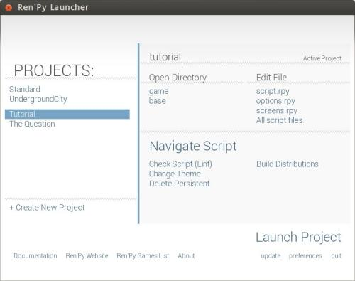
▲圖2：這就是 Ren'Py 的啟動器！
上圖所示的是 6.14.X 版的啟動器，長相和 6.13 的啟動器樣子完全不一樣，第一次看到時，或許讓人有點發慌......
【啟動器面板】 啟動器面板僅僅只有開發者會看到，遊戲做好後不會附在遊戲中，和玩家半點關係也沒有。此外，其實這個啟動器程式也是用 Ren'Py 做的，從技術上來說，也算是一個 Ren'Py 遊戲......別慌！咱這就解說一下面板內容。
選擇專案與啟動遊戲
請看啟動器左上角。 大大的「PROJECTS（專案列表）」文字下方，列出了目前啟動器所探查到的所有遊戲專案。遊戲開發者可以選擇其中一項遊戲專案，作為當前的「Active Project（活動專案）」 啟動器面板上，絕大多數的操作與訊息提示，都是針對「活動專案」而運作。選定活動專案是開發者的第一要務。
新使用者第一次執行啟動器時，專案列表中應該只會看到兩個項目：「Tutorial」與「The Question」。前者是 professor Eileen 以遊戲形式進行的 Ren'Py 設計教學，咱常常去上她的課；後者則是一個簡單的示範遊戲，讓玩家可以看看一個完整遊戲應該怎麼拼裝起來，不過可惜這遊戲給咱的幫助，並沒有 professor Eileen 來得大......
不用說，這兩個範本遊戲都是英文的。但就算英文苦手，看看艾琳教授提供的效果示範，那也是很有參考價值的。
右下角處有個大而顯眼的「Launch Project（啟動專案）」字樣。按了之後，活動專案就會立刻從頭執行、任您試玩。
升級
在「Launch Project（啟動專案）」的大按鈕下方，共有3 個小按鈕，從右到左依序為「離開 (quit)」、「設定 (preferences)」與「升級 (update)」。
此處的「升級」，不是指遊戲升級，而是指 Ren'Py 引擎（含開發工具）升級－－這套整合升級系統是 6.14 版提供的最新功能。按下後會立刻連上網路，檢查是否有新的 Ren'Py 版本發佈，並在您確認要升級後進行更新。
【升級頻道】您可以在設定頁面中，選擇不同的升級頻道。看是要採用慢而穩定的 Release 升級頻道，還是要快而激進地搶先使用不穩定的 Experimental 升級頻道。這邊提醒一下：當您選定了一個 Ren'Py 引擎版本來開發遊戲後，就算 Ren'Py 之後又提供了新版本，您也沒有必要勉強自己追上新版本的遊戲引擎，而可以繼續使用舊有版本開發遊戲。
如果您要升級，好讓遊戲引擎能得到更好的效能、相容性乃至於新特性，建議先看看「不相容說明頁面」，以免因為升級而不小心弄掛了遊戲。雖然這種狀況很少。
設定
按下「preferences（設定）」按鈕後，會跳出設定畫面：
▲圖3：設定畫面
左上角的「Projects Directory（專案目錄）」，是指「收集您所有專案」的目錄，而非特指某個遊戲的目錄。
舉例來說，您的遊戲與「專案目錄」間的關係，將會像這樣：
- .../專案目錄/遊戲1的目錄
.../專案目錄/遊戲2的目錄
.../專案目錄/遊戲3的目錄
若您是第一次執行 Ren'Py 啟動器，「專案目錄」這邊應該會顯示成「未指定」的狀態。不管怎麼說，在您建立一個新的遊戲專案之前，最好把此處的「專案目錄」給設定好，免得 Ren'Py 自動將您新建的遊戲，藏在某些奇怪的地方。
建議您現在就設定它。設定在哪都行，只要自己知道位置就好。
使用的編輯器
「Text Editor（文字編輯器）」可以讓您選擇，您要用什麼文字編輯器來編寫程式碼。
【文字編輯器】所謂「文字編輯器」，就是可用來瀏覽「純文字檔案」，並在其中打字的那種程式。然而和 Word 之類的文書編輯軟體相比，「文字編輯器」並不能用來處理有格式的文字。（比方說網頁）要說「文字編輯器」的範例，對 Windows 使用者來說，最常見到的文字編輯器大概就是「記事本」了。
Ren'Py 過去主推的編輯器是 jEdit，但自從更新到 6.14 版後，預設推荐的編輯器就換成了 Editra，據說日後 jEdit 的官方支援會漸漸消失。
然而非常可惜地，Editra 編輯器對輸入法 (IME) 的支援有問題，因此所有中日韓文用戶都無法在 Linux 與 Mac OSX 下輸入他們的文字，而在 Windows 下輸入法運作也有瑕疵，因此對中文使用者來說不太可用，所以只能扔掉。詳情見此頁的錯誤回報：https://lemmasoft.renai.us/forums/viewtopic.php?f=32&;t=14498&start=15#p209969
對 Ren'Py 來說，這檔子事也不是第一次發生了。想以前主打 jEdit 時，當時的 jEdit 也有中文顯示不出來，得另調設定才能顯示的毛病，不久前才好不容易修好，眼看又要把 jEdit 拋掉了……喂！這是打算把反中日韓傾向貫徹到底嗎？
（苦笑）
不管怎麼說，請在此處選擇您想使用的編輯器。如果您完全沒概念的話，選 "jEdit" 或 "System Editor" 通常會是不錯的主意。
若選擇「System Editor（系統編輯器）」，啟動器會用您系統預設的編輯器來開啟程式檔案。而若選擇 "None"，則啟動器本身將不會去開啟任何檔案－－您當然不該選 "None"。
面板中的其他選項目前並不重要，且現在缺乏基礎，也不好解釋，之後有必要再回來講。請按 Back 跳回主畫面。
介面說明先告一段落，我們實際建立一個專案試試。
新建專案
請確定已經將「設定」中的「專案目錄」給指派好，之後只要按下圖中的按鈕......
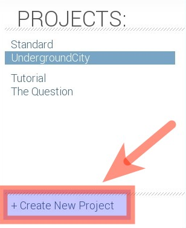▲圖4：按這裡建立新專案
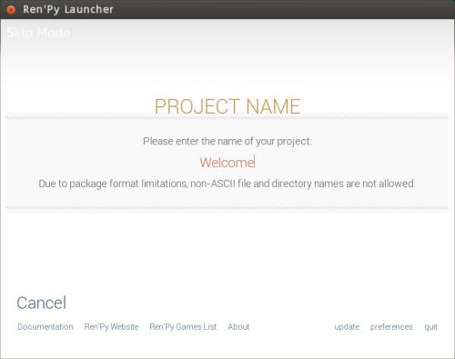▲圖5：設定專案名字
按下「Create New Project（新建專案）」按鈕後，立刻會跳出畫面，要您設定專案名字。名字雖然只接受英文，不過別擔心，這邊設定的名字只是專案代號而已，顯示在玩家眼前的名字日後是可以改成中文的。
就取一個簡單清晰的開發代號吧。
這個名字最重要的意義，是會在未來成為本專案資料夾的目錄名。其中雖然可以包含空白，不過基於程式設計常識建議您不要這麼做，或許能少碰上一些潛在的麻煩。
按下鍵盤上的 Enter 按鈕，就能確定名字，接著會進入 Theme（介面主題）選擇畫面。
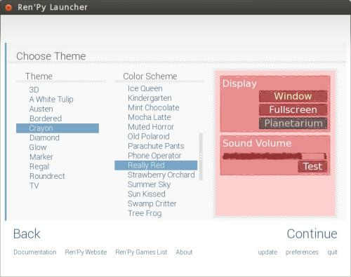▲圖6：選擇 theme 與色彩佈局。
此處是用來定義您遊戲介面風格的，選好後按 Continue 就行了。
如果選項太多，一時不能確定也不用煩惱，反正醜介面看三天就會習慣……啊不我說錯了，是日後可以再調整啦。總之這裡先隨便選一個差不多順眼的。
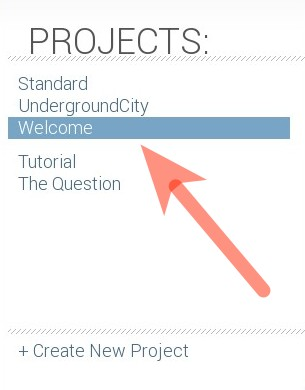▲圖7：挪，新專案就在這裡。
專案名是 "Welcome"。兩步驟完成後，新專案就被建出來了，雖然還沒有內容，不過完全可以跑起來。興高采烈地馬上去按「Launch Project（啟動專案）」按鈕，試試效果。
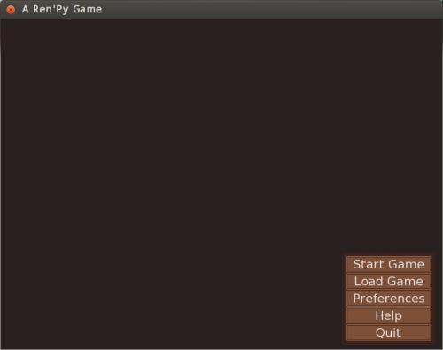▲圖8：這就是新遊戲專案 "Welcome"。
其使用介面風格是 "Diamond"，使用色彩佈局為 "Dramatic Flesh"。參考一下吧。
按下「Start Game（開始遊戲）」看看......
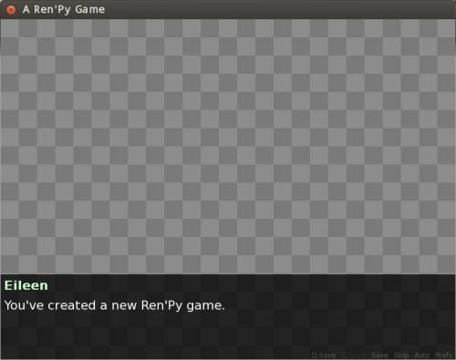▲圖9：按下 Start Game 後，艾琳教授將從旁親切地給您提示。
雖然可以跑是不錯啦，不過……怎麼好像讓人有點小失望？
主選單畫面中空空如也，選單選項也全是英文的？啟動遊戲後居然只有棋盤格！再說視窗標題處還顯示成 "A Ren'Py Game"……不管怎麼看都很不專業啊！更別說那比例，還是 4:3 這種時代的遺留物......
安啦，都可以改的。咱們慢慢來吧。
【灰色的棋盤格】棋盤格畫面在 Ren'Py 中的意義，和任何主流圖片製作軟體一樣，代表的是「透明」－－是那種「就連白色也沒有」的空空如也。當然囉，遊戲做好時，您絕對不會打算在螢幕上曝露出如此失態的東西。就算只是平凡無奇的藍白條紋也好，做遊戲時把螢幕填滿可是人類的義務！
啟動器介紹 Part 2
有了具體的遊戲專案可玩後，這就繞回來補充介紹，看看啟動器能對當前專案 (Active Project) 提供怎樣幫助。
請看 Launch Project 按鈕上方的大空間（或說主畫面的右半部）。此處提供了對當前活動專案的操作支援。
打開資料夾
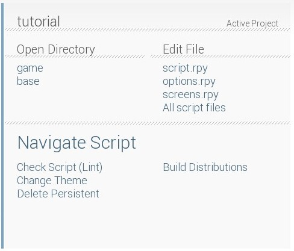▲圖10：啟動器主畫面的右半部
首先，最上方會顯示目前活動專案的名稱（此例圖中為 "tutorial"）。
- game 資料夾：
收集了當前遊戲一切腳本、圖片與音樂等資源。 - base 資料夾：
就是當前遊戲的根目錄－－記得嗎？您新建遊戲時有替它取過名字。
和本遊戲有關的一切檔案，都被集中存放在此一資料夾中。其中除了包含 game 資料夾外，還可放置其他和遊戲有關，但遊戲執行時又不會直接用到的檔案－－比方說像是說明手冊、授權聲明與啟動圖示一類的東西。
這兩個資料夾，在遊戲開發的歷程中會不斷被用到，特別是 game 資料夾。各種圖片、音樂、腳本等檔案進進出出，全都要存取 game 資料夾。
腳本檢查與永久性資料
「Check Script（檢查腳本）」按鈕，可以讓 Ren'Py 主動分析您的遊戲程式腳本，以取得一些參考資訊，比方說故事中總共有多少句對白，平均場景對話數、每句對話的語句長度等等。不過需注意，如果您的程式碼有任何語法錯誤，這些資訊是跑不出來的。
【Script】如果您有戲劇或程式設計背景，本文中的「Script（腳本）」，就差不多是您記憶中的那個意思，頂多只是格式有所不同。不管怎麼說，在本文中，您可以把腳本、程式碼與 Script 視為同義詞。
「Change Theme（變更介面主題風格）」如字面上的意思，可以再次改變您的介面風格，畫面就和新建專案時見過的一樣，這邊不提。
下方的「Delete Persistent（刪除永久性資料）」按鈕，那是用來刪除當前專案的「永久性資料 (persistent data)」的......好吧，我知道「永久性資料」這詞實在太過裝模作樣，簡單解釋一下，所謂的永久性資料，不包含存檔，也與單一存檔進度無關，僅僅只用在 「與遊戲整體有關的狀態變化」上。
果然還是很裝模作樣？這……舉例而言，就像是主選單的隱藏要素解鎖、破台次數、畫廊圖片解鎖、已閱讀過的語句記錄（才可正確地中斷快進）之類的。這些都和單一遊戲進度無關，但又確實需要記錄的東西……再不懂我也解釋不出來了！如果您想看看官方的說明（英文），可參考這裡：https://www.renpy.org/wiki/renpy/doc/reference/Persistent_Data
總之，您在測試的過程中，有時會想刪除永久性資料來初始化您的遊戲。這時敲它就對了。
建立發行版
右邊的「Build Distributions（建立發行版）」選項可以讓您創建當前遊戲的發行版－－就是可讓玩家抓去玩，或是要燒成光碟的版本。
我們現在按下「建立發行版」按鈕，會跳出發行版設定畫面......
阿勒？這是什麼？
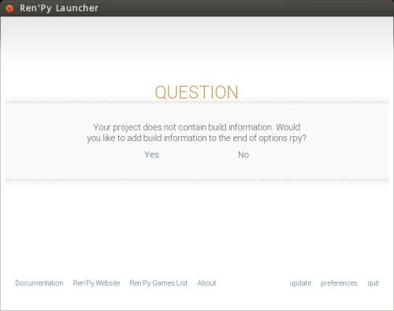▲圖11：第一次建立發行版時，可能會問您問題......
其實按下 "Build Distributions" 時，Ren'Py 會探測您的 options.rpy 檔案內，有沒有包含建立發行版所需的資訊，如果沒有，就會很好心地幫您將基本資料新增在該檔案的尾部。
按 yes 吧，否則沒法繼續。
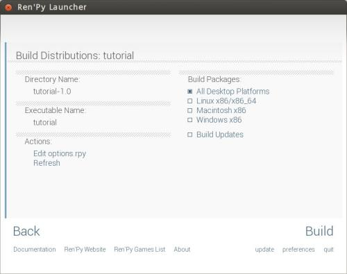▲圖12：終於進入發行版設定畫面了
發行版畫面左側提供了些許遊戲當前的設定資訊，而右側，則是一些可供複選的選項。這些選項中，您可以選擇具體要建立哪些平台的發行版。
透過本介面建立的發行版可以單獨啟動，而不需要搭配開發包與啟動器，也不用裝其他依賴程式，更不用安裝進電腦......滑鼠直接雙擊就能開始玩。
發行版選單中「Build Updates（建立升級）」選項，可讓您分發出去的遊戲支援補丁 (patch) 功能。當您將遊戲小幅度升級後，玩家就不必從頭下載一個全新版本，而可以直接打補丁......當然這個問題和各位還很遙遠，需要時再去就好翻手冊研究，現在不管。
發行版選單雖然方便，但很多進階設定，比方說資源加密、變更執行檔檔名、圖示等，還是得手動編輯 options.rpy 中的相關選項才能處理。透過左側的 "Edit options.rpy"，可以快速將設定檔打開來編輯。
編輯時，建議參考這份說明：https://www.renpy.org/doc/html/build.html。
您現在還不會編沒關係，簡單跳過吧，這部份日後再講。
腳本檔案導覽
回到啟動器面板的右半部。
▲圖10：啟動器主畫面的右半部
您應該注意到了，右上角有個寫著「Edit File（編輯檔案）」的區域。按它下面的那些檔案名稱，就可以將腳本檔案打開來檢閱與編輯。
不過老實說，這部份的功能相當殘念，因為列在上面的檔案固定就那三個，數量太少了還不能自訂，所以完全不實用，我平常都無視它。除非您想用「All File（一次打開所有檔案）」的選項……但這種作法又有點太過粗暴，太虐待電腦了。
幸好，啟動器中還有其他替代方案！而且功能超強......
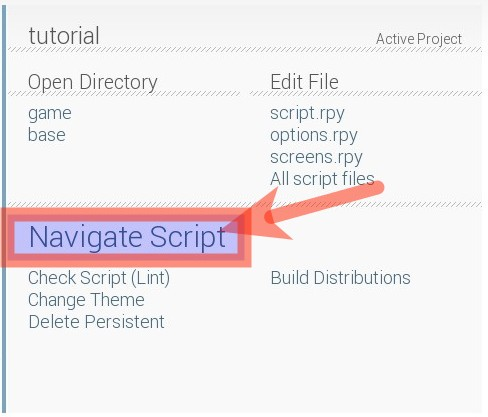▲圖13：Navigate Script 按鈕。
「Navigate Script（腳本導航）」的按鈕看起來很像標題，總讓在下忽略它其實是可以按的。我只要持續一週沒開 Ren'Py 就會忘記它，老找不到功能藏在哪裡......
總之，按下之後會跳出如下畫面：
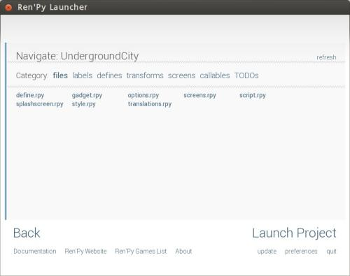▲圖14：Navigate 選單，內容分上下兩排。
上面的「Category」表示分類，點選這些分類後，底下就會照您當前的遊戲內容，自動分析出所有有關項目。
點列出的項目後，就能立刻開啟對應的檔案－－若您所用的是 Ren'Py 預設提供的 Editra 編輯器，還可直接跳到該項目所在的行數去，方便得沒話說，但如果用系統編輯器，就沒能支援行數功能了。如果您想寫點小程式，讓您熱愛的編輯器完整支援 Ren'Py，參考資料在此：https://www.renpy.org/doc/html/editor.html。當然囉，如果是新手，還是建議跳過這部份，太難的東西對士氣打擊可是很大的。
好啦，啟動器介紹已經非常充份了，大家準備興致勃勃地撰寫遊戲內容了嗎？
嘛（推眼鏡），請先別急。本回字數已經嚴重爆表，我們就下次再續吧。給咱等著啊！
（本篇完）
「啊那個那個，對、對不起！稍微迷路了一下，通告遲到......」
（用各種意義上都很同情的眼神盯著她瞧）
......乖哦。（給顆糖）

「等一下！這是什麼意思啊？喂！」
（下回待續！）
註一：當然囉，基於創作共享理念的蓬勃發展，網路上也有大量 CC 授權的素材可用，不過即使如此，想全靠共享素材製作遊戲，不管怎麼說還是十分為難人的。本文日後也會多少提及素材搜尋、製作與使用方面的問題。敬請期待！
註二：要用 Ren'Py 製作角色扮演遊戲，嚴格來說還是可以的，但作者得手刻很多程式碼，比方說親手建立物品欄與任務系統之類的東東。只要有心，也有人可以做出這種遊戲：https://games.renpy.org/game/loren-amazon-princess.shtml
註三：您可能會感到困惑：「寫程式？要我寫那種看起來像密碼一樣的東西？這聽起來就又難又麻煩。為什麼不選一款完全不用寫程式，在螢幕上拖拖拉拉點點滑鼠就能做遊戲的軟體呢？」
親愛的觀眾啊，那種軟體當然是有的，不過可選的種類就少了很多，而且引擎的限制往往也更多。這是因為，愈是強大的遊戲引擎，需要讓使用者加以評估操控的東西也愈多，而其結構也會愈複雜。而這種複雜性，通常很難被包裝在圖形使用者介面裡。
如果您就是要找這種拉拉滑鼠就能製作遊戲的程式，或許可以參考光譜代理的「戀愛遊戲製作大師®」與「RPG 製作大師®」系列－－這兩款是我之前有多少接觸過的。
您也許有興趣閱讀以下文章:
- 《雪凡與好朋友們的 Ren'Py 遊戲引擎初學心得提示》第九回：變數管理與 Screen 系統 - 2013-09-08
- 《雪凡與好朋友們的 Ren'Py 遊戲引擎初學心得提示》第八回：大雜煮與黑暗鍋！ - 2013-05-13
- 《雪凡與好朋友們的 Ren'Py 遊戲引擎初學心得提示》第七回：粒子之下，色彩之上 - 2013-03-06
- 《雪凡與好朋友們的 Ren'Py 遊戲引擎初學心得提示》第六回：Displayable 與動畫轉置語言 - 2013-01-09
- 《雪凡與好朋友們的 Ren'Py 遊戲引擎初學心得提示》第五回：所以說語言是人類文明的瑰寶 - 2012-12-10
- 《雪凡與好朋友們的 Ren'Py 遊戲引擎初學心得提示》第四回：設定、設定以及更多設定！ - 2012-11-22
- 《雪凡與好朋友們的 Ren'Py 遊戲引擎初學心得提示》第三回：電子小說快速上手！ - 2012-11-01
- 《雪凡與好朋友們的 Ren'Py 遊戲引擎初學心得提示》第二回：基本觀念與前置作業！ - 2012-10-18
專欄總覽


E-Mail：contact@openfoundry.org Address：台北市南港區研究院路2段128號 中央研究院資訊科學研究所 . 隱私權條款. 使用條款

評論
現在中文的Ren’Py的教程真 的不多，非常感謝！
另外，我是一名遊戲的移植者，所 以希望它能夠相容更多的平臺。我 希望知道使用Ren’Py引擎的 遊戲是否可能編譯到iOS系統上 ？因為從語言方面來說似乎問題不 大，但是原作者表示不希望與蘋果 扯上關係，所以就算要這麼做也只 能自己動手了。
期待看到您的更多優秀的教程！